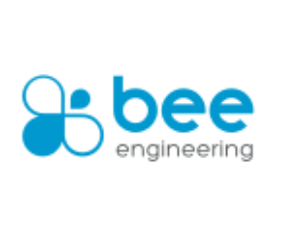
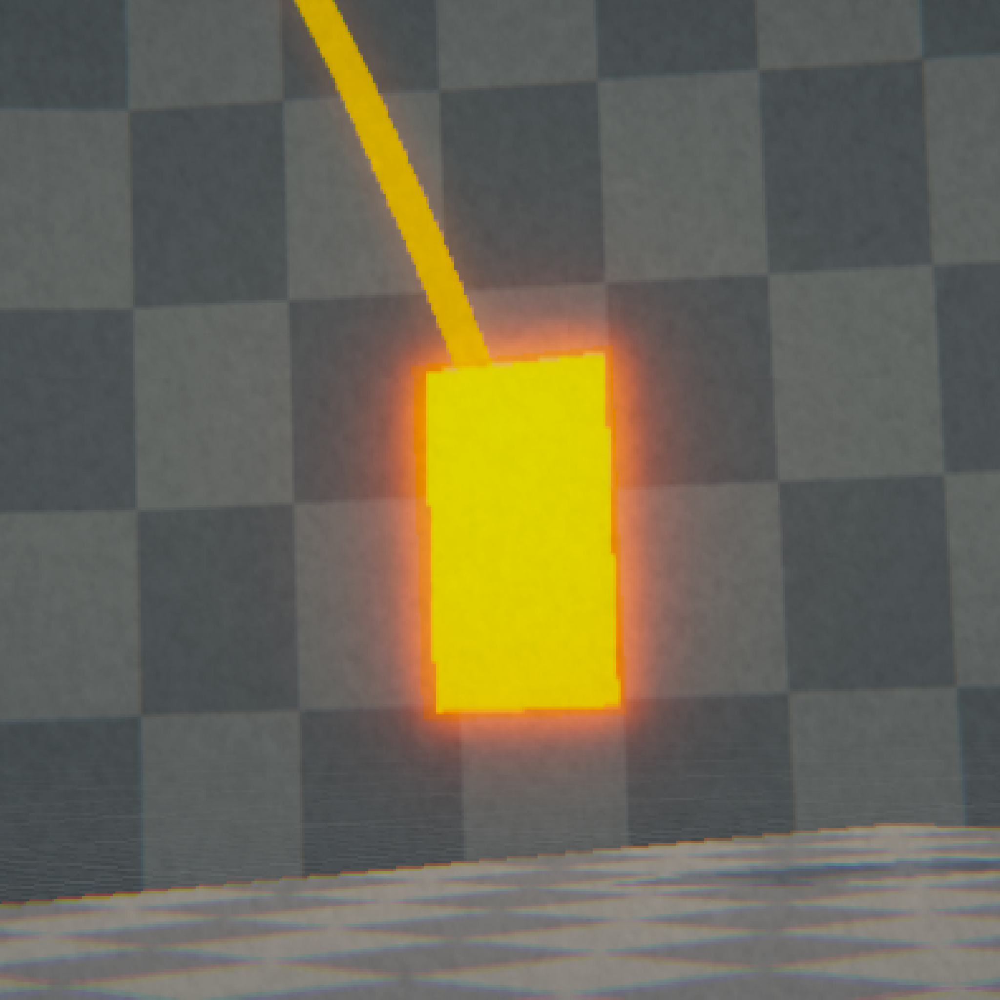
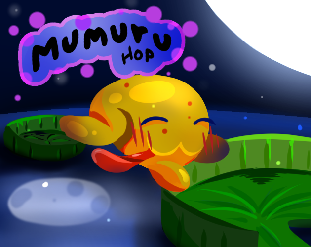
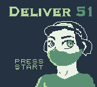
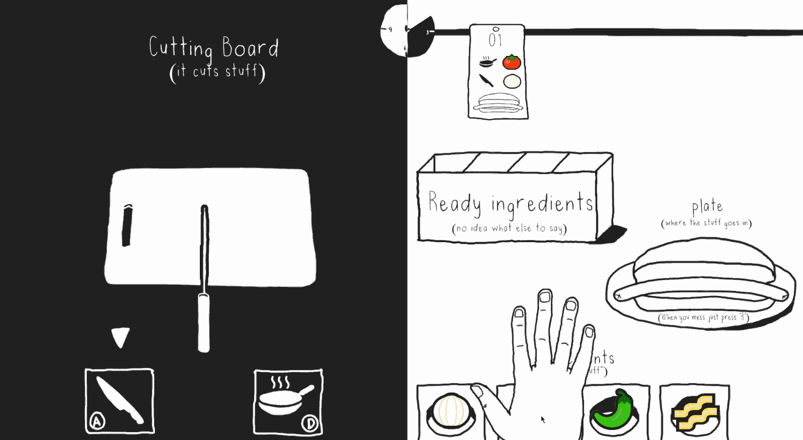
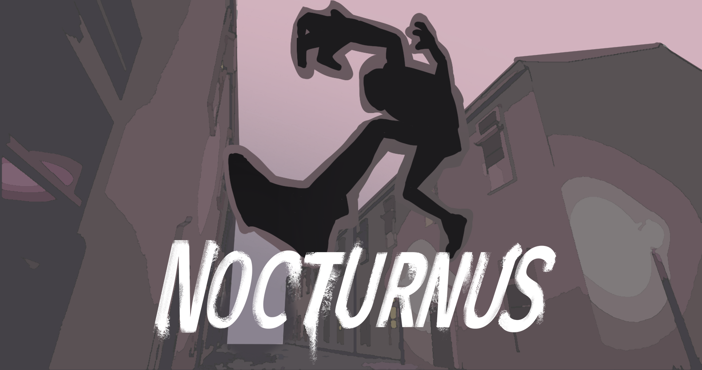

EXPERIENCE

Bee Engineering ICT
Bee Engineering ICT provides perfectly fitted tech solutions for businesses. While there, I had the pleasure of working at Nectar Interactive, its video game development team, using Unity3D to create mobile-focused WebGL hypercasual games.
Bee Engineering ICT website

BOXXED
A Unity third-person 3D puzzle platformer where you solve puzzles by pulling and throwing boxes.
View BOXXED

Mumuru Hop
A mobile puzzle game developed for Game Jam+ 2022, where you jump from lily pad to lily pad to reach the goal.
View Mumuru Hop

Deliver 51
An adventure RPG made with GB Studio. Travel through obstacles to deliver a request to a very special client.
View Deliver 51

Hot Mess
A co-op multiplayer cooking game made for Global Game Jam 2022. Each player controls one side of the screen.
View Hot Mess

Nocturnus
An Unreal Engine 5 first-person parkour game where you explore a village to find your lost cassettes.
View Nocturnus
< BACK TO PORTFOLIO